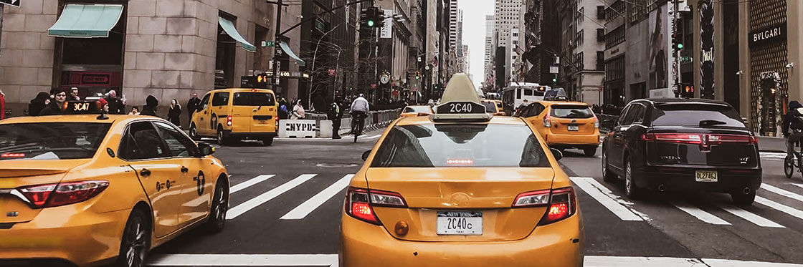

The impact of Uber/Lyft and COVID-19 on New York City's biggest industry; Yellow Cabs.
Caroline Stevenson
JNL 221 Final Project

Photo by Introducing New York
New York City; known for its bright lights, bustling atmosphere, and of course, its yellow taxi cars. A once-promising industry, that had been basically ingrained into the makeup of the city, now seems to be a thing of the past. These yellow cars are now replaced by dull-colored vehicles, labeled “Uber” and “Lyft.”
In 2010, Travis Kalanick and Garrett Camp released the app Uber, after asking themselves the question "What if you could request a ride from your phone?" At the click of a button, users could order a car to their exact location, while being able to track the driver's location, estimated pickup time, and exact monetary charge, all before even leaving their location. By 2015, the app was already deemed the most valuable startup in the world, and people began opting for ordering Ubers rather than hailing cabs for ordering Ubers.
In the chart below, we can see how around 2011-2012, the rise in Uber coincided with the drop in Yellow Taxi rates, which has continued to drop ever since.
For New Yorkers, such as 9-year Brooklyn resident Jen Michalski, using Yellow Cab services regularly is not necessary nor ideal. “I hardly ever use Yellow Cab services. Maybe once a year, if that. I use Uber or Lyft at least once a week.” Using apps such as Uber and Lyft, a similar app, is simple and logical.
“I use Uber/Lyft more often because it's easy, the pricing seems a bit better (especially for long distances, I can count on an Uber/Lyft to be cheaper than a Yellow Cab), it feels more efficient / faster, and it's really accessible (I hardly ever see Yellow Cabs in Brooklyn, so I'd never get anywhere if I relied on them)."
This widespread mentality has contributed to the ongoing success of Uber, as well as other ridesharing apps such as Lyft, as noted in the chart below.
Analyzing this chart, it is easy to see the rise in Uber and Lyft usage since 2015 and its prevalence within the city. Yet, it's also important to note the decline in both Uber and Lyft in 2020, around the time of the start of the infamous COVID-19 pandemic. Within nationwide lockdowns and closures imposed, millions of people were stuck inside for months on end, causing seemingly irreparable damage to an industry that relies solely on customer demand.
Yet, there was also a notable shift in demand, as pointed out by Data Scientist Stuart Ross, co-author of “Changing Demand for New York Yellow Cabs during the COVID-19 Pandemic,” a scholarly article analyzing several changes impacting the Yellow Cab industry, introduced by the pandemic. While the article notes a “steep drop off” in passenger rates, dually noted by the chart above, Ross says another important finding was the increase in travel from impoverished areas. “While we saw a decrease in cab/uber services during weekends/nights (people going to clubs), we saw an increase in these services in the early morning and during the day, especially in less affluent neighborhoods,” said Ross. In situations like these, Ross says, the monetary cost of a ride is even more important, as noted earlier by Michalski.
Photo by Politico
“But since it's those from lower-income neighborhoods that were traveling more potentially for work), they likely will care a lot more about the best price between Uber / Lyft and cabs,” said Ross.
Yet, as vaccination rates climb and more and more businesses continue to resume in-person activities, more people are beginning to use Uber and Lyft once again, which will have a negative impact on these low-income communities. “I've noticed that Uber/Lyft have gotten way more expensive,” said Michalski. “Maybe it's because they don't have Uber Pool anymore, but I've sensed a spike in prices that makes the app less accessible than it used to be. I'm sure communities of lower-income are impacted by this.” While Uber and Lyft prices soar, Yellow Cab revenue continues to drop, with drivers being negatively impacted by the dying industry. In the chart below, we can see the dually-declining number of “unique workers” working per month and the average monthly earnings per driver.
In another 10 years, it's unpredictable what the transportation industry will look like within the Big Apple. And while the Yellow Cab industry continues to feel the painful impacts of both the pandemic and Uber and Lyft, residents of NYC are sad to see it occur, even if they are at fault.
“I think generally New Yorkers are cognizant of the fact that Uber/Lyft have wiped out the Yellow Cab business -- and there's some level of guilt, at least that I feel, when I'm standing at a curb waiting for my Uber, and multiple available cab drivers stop in front of me to ask if I need a ride. You feel bad having to tell them no, with the knowledge that 5-10 years ago, they had all the riders in the world” said Michalski.